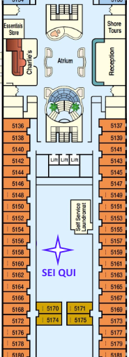

Tramite questi due pulsanti sposta l'immagine che troverai orientando il device verso la freccia blu, e sovrapponila a quella reale. Quindi clicca sulla stessa e avvierai la Realtà Aumentata. Potrai scegliere tramite i pulsanti in alto la location sulla quale avere più informazioni
